HIERARCHICAL CLUSTERING IN R: THE ESSENTIALS (层级聚类)
link1-lesson
link2-heatmap-extend
Agglomerative Hierarchical Clustering
丛集聚类
分裂聚类
Steps to agglomerative hierarchical clustering
Data structure and preparation
# Load the data
data("USArrests")
# Standardize the data
## The R function scale() can be used for standardization
df <- scale(USArrests)
# Show the first 6 rows
head(df, nrow = 6)| Murder | Assault | UrbanPop | Rape | |
|---|---|---|---|---|
| Alabama | 1.24256408 | 0.7828393 | -0.5209066 | -0.003416473 |
| Alaska | 0.50786248 | 1.1068225 | -1.2117642 | 2.484202941 |
| Arizona | 0.07163341 | 1.4788032 | 0.9989801 | 1.042878388 |
| Arkansas | 0.23234938 | 0.2308680 | -1.0735927 | -0.184916602 |
| California | 0.27826823 | 1.2628144 | 1.7589234 | 2.067820292 |
| Colorado | 0.02571456 | 0.3988593 | 0.8608085 | 1.864967207 |
Similarity measures
# Compute the dissimilarity matrix
# df = the standardized data
res.dist <- dist(df, method = "euclidean") # Euclidean and manhattan# view distance
as.matrix(res.dist)[1:6, 1:6]| Alabama | Alaska | Arizona | Arkansas | California | Colorado | |
|---|---|---|---|---|---|---|
| Alabama | 0.000000 | 2.703754 | 2.293520 | 1.289810 | 3.263110 | 2.651067 |
| Alaska | 2.703754 | 0.000000 | 2.700643 | 2.826039 | 3.012541 | 2.326519 |
| Arizona | 2.293520 | 2.700643 | 0.000000 | 2.717758 | 1.310484 | 1.365031 |
| Arkansas | 1.289810 | 2.826039 | 2.717758 | 0.000000 | 3.763641 | 2.831051 |
| California | 3.263110 | 3.012541 | 1.310484 | 3.763641 | 0.000000 | 1.287619 |
| Colorado | 2.651067 | 2.326519 | 1.365031 | 2.831051 | 1.287619 | 0.000000 |
Linkage
res.hc <- hclust(d = res.dist, method = "ward.D2")Verify the cluster tree
One way to measure how well the cluster tree generated by the hclust() function reflects your data is to compute the correlation between the cophenetic distances and the original distance data generated by the dist() function.
If the clustering is valid, the linking of objects in the cluster tree should have a strong correlation with the distances between objects in the original distance matrix.
评估聚类效果的方法之一，就是评估 hclust() 算出来的距离 和 用dist()算的原始数据的距离，二者之间的相关性好不好。
The closer the value of the correlation coefficient is to 1, the more accurately the clustering solution reflects your data. Values above 0.75 are felt to be good.
The “average” linkage method appears to produce high values of this statistic.
相关性越接近 1，说明聚类的效果越能反映真实情况.
# Compute cophentic distance
res.coph <- cophenetic(res.hc)
# Correlation between cophenetic distance and
# the original distance
cor(res.dist, res.coph)0.697526563237039
# Execute the hclust() function again using the average linkage method
res.hc2 <- hclust(res.dist, method = "average")
cor(res.dist, cophenetic(res.hc2))0.718038237932047
Dendrogram(树状图)
Dendrogram can be produced in R using the base function plot(res.hc), where res.hc is the output of hclust()
plot(res.hc, cex = 0.8)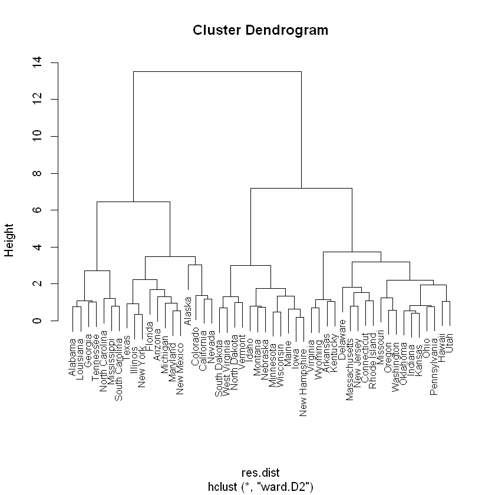
fviz_dend() ( in factoextra R package ) to produce a beautiful dendrogram.
# cex: label size
suppressPackageStartupMessages(library("factoextra"))
fviz_dend(res.hc, title='', cex = 0.7)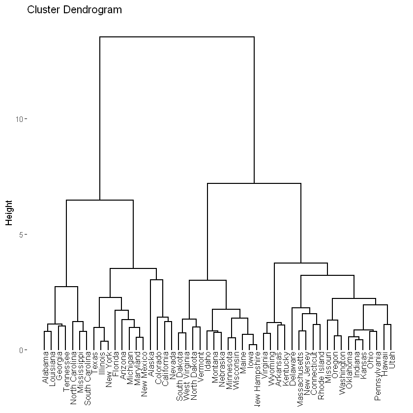
Cut the dendrogram into different groups
You can cut the hierarchical tree at a given height in order to partition your data into clusters.
The R base function cutree() can be used to cut a tree, generated by the hclust() function, into several groups either by specifying the desired number of groups or the cut height.
# Cut tree into 4 groups
grp <- cutree(res.hc, k = 4)
head(grp, n = 4)- Alabama
- 1
- Alaska
- 2
- Arizona
- 2
- Arkansas
- 3
# Number of members in each cluster
table(grp)grp
1 2 3 4
7 12 19 12
# Get the names for the members of cluster 1
rownames(df)[grp == 1]- 'Alabama'
- 'Georgia'
- 'Louisiana'
- 'Mississippi'
- 'North Carolina'
- 'South Carolina'
- 'Tennessee'
fviz_dend(res.hc, title='', cex=0.7, k=4, type='rectangle', rect=T ,rect_border = "jco", rect_fill = TRUE, horiz = TRUE) # type='scatter'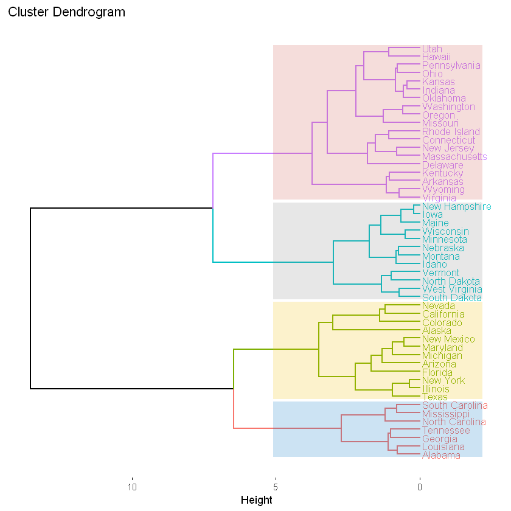
Cluster R package
The R package cluster makes it easy to perform cluster analysis in R. It provides the function agnes() and diana() for computing agglomerative and divisive clustering, respectively. These functions perform all the necessary steps for you. You don’t need to execute the scale(), dist() and hclust() function separately.
library("cluster")
# Agglomerative Nesting (Hierarchical Clustering)
res.agnes <- agnes(x = USArrests, # data matrix
stand = TRUE, # Standardize the data
metric = "euclidean", # metric for distance matrix
method = "ward" # Linkage method
)
# DIvisive ANAlysis Clustering
res.diana <- diana(x = USArrests, # data matrix
stand = TRUE, # standardize the data
metric = "euclidean" # metric for distance matrix
)Warning message:
"package 'cluster' was built under R version 4.0.5"
fviz_dend(res.diana, cex = 0.7, k = 4, horiz = T, type = 'circular')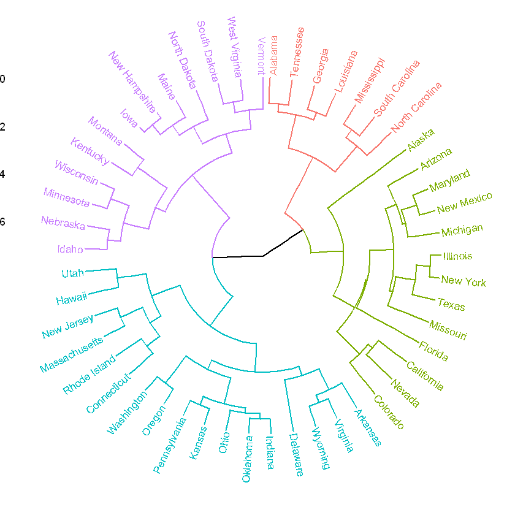
Application of hierarchical clustering to gene expression data analysis
In gene expression data analysis, clustering is generaly used as one of the first step to explore the data.
We are interested in whether there are groups of genes or groups of samples that have similar gene expression patterns.
Several clustering distance measures have been described for assessing the similarity or the dissimilarity between items, in order to decide which items have to be grouped together or not.
These measures can be used to cluster genes or samples that are similar.
For most common clustering softwares, the default distance measure is the Euclidean distance.
The most popular methods for gene expression data are to use log2(expression + 0.25), correlation distance and complete linkage clustering agglomerative-clustering.
Note that, when the data are scaled, the Euclidean distance of the z-scores is the same as correlation distance.
Pearson’s correlation is quite sensitive to outliers. When clustering genes, it is important to be aware of the possible impact of outliers.
An alternative option is to use Spearman’s correlation instead of Pearson’s correlation.
Comparing Cluster Dendrograms in R
Data preparation
df <- scale(USArrests)
# Subset containing 10 rows
set.seed(123)
ss <- sample(1:50, 10)
df <- df[ss,]Dendrograms comparison
suppressPackageStartupMessages(library(dendextend))
# Compute distance matrix
res.dist <- dist(df, method = "euclidean")
# Compute 2 hierarchical clusterings
hc1 <- hclust(res.dist, method = "average")
hc2 <- hclust(res.dist, method = "ward.D2")
# Create two dendrograms
dend1 <- as.dendrogram (hc1)
dend2 <- as.dendrogram (hc2)
# Create a list to hold dendrograms
dend_list <- dendlist(dend1, dend2)- Visual comparison of two dendrograms
# Align and plot two dendrograms side by side
dendlist(dend1, dend2) %>%
untangle(method = "step1side") %>% # Find the best alignment layout
tanglegram() # Draw the two dendrograms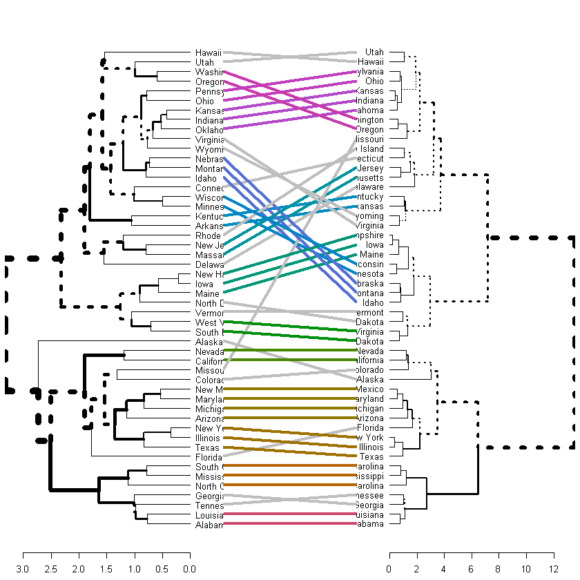
Heatmap in R: Static and Interactive Visualization
R Packages/functions for drawing heatmaps
- heatmap() [R base function, stats package]: Draws a simple heatmap
- heatmap.2() [gplots R package]: Draws an enhanced heatmap compared to the R base function.
- pheatmap() [pheatmap R package]: Draws pretty heatmaps and provides more control to change the appearance of heatmaps.
- d3heatmap() [d3heatmap R package]: Draws an interactive/clickable heatmap
- Heatmap() [ComplexHeatmap R/Bioconductor package]: Draws, annotates and arranges complex heatmaps (very useful for genomic data analysis)
data preparation
# start by standardizing the data to make variables comparable
df <- scale(mtcars)R base heatmap: heatmap()
heatmap(df, scale = "row")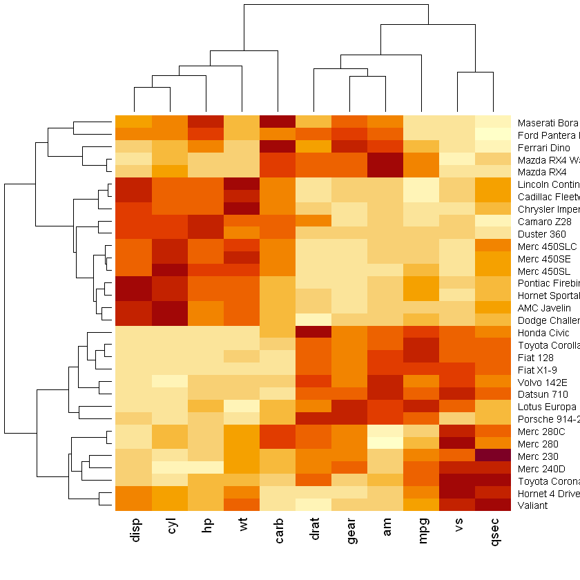
It’s possible to specify a color palette using the argument col, which can be defined as follow:
- use custom colors
col<- colorRampPalette(c("red", "white", "blue"))(256)- Or, using RColorBrewer color palette:
library("RColorBrewer")
col <- colorRampPalette(brewer.pal(10, "RdYlBu"))(256)Additionally, you can use the argument RowSideColors and ColSideColors to annotate rows and columns, respectively.
# Use RColorBrewer color palette names
library("RColorBrewer")
col <- colorRampPalette(brewer.pal(10, "RdYlBu"))(256)
heatmap(df, scale = "none", col = col,
RowSideColors = rep(c("blue", "pink"), each = 16),
ColSideColors = c(rep("purple", 5), rep("orange", 6)))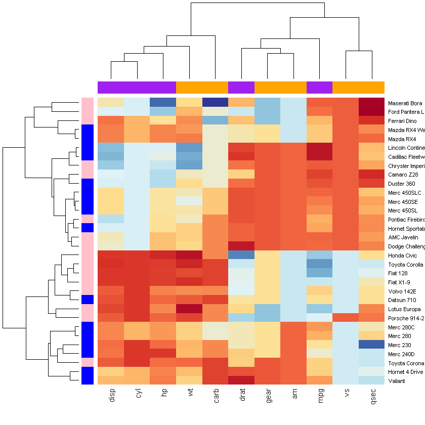
Enhanced heat maps: heatmap.2()
# install.packages("gplots")
suppressPackageStartupMessages(library("gplots"))
heatmap.2(df, scale = "none", col = bluered(100),
trace = "none", density.info = "none")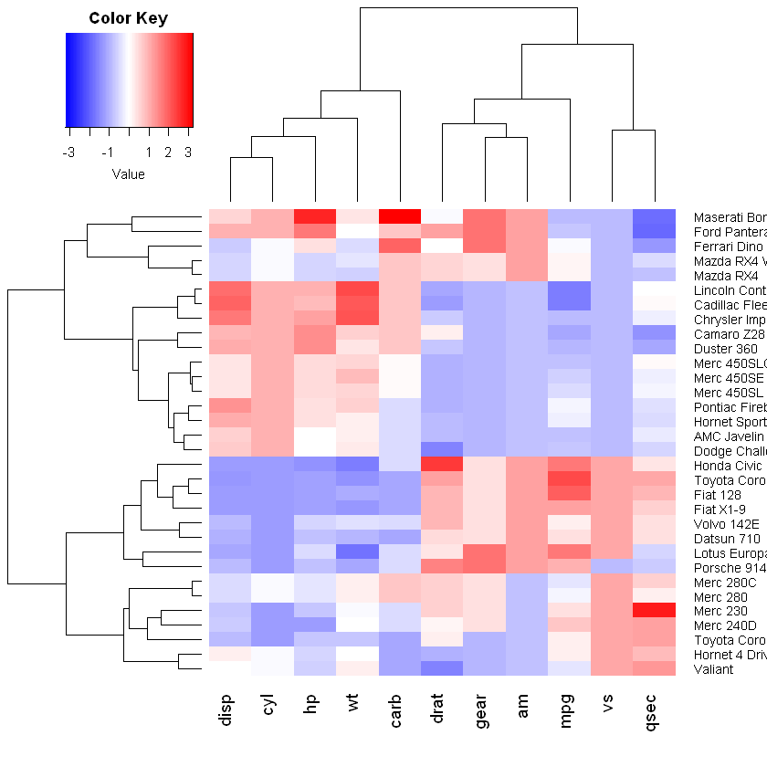
Pretty heat maps: pheatmap()
library("pheatmap")
pheatmap(df, cutree_rows = 4, cutree_cols = 2)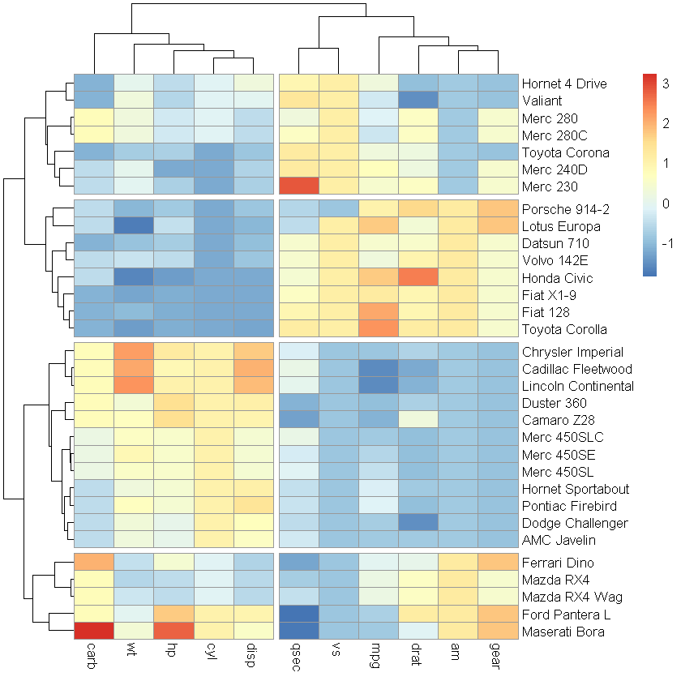
Interactive heat maps: d3heatmap()
Complex heatmap
simple heatmap
suppressPackageStartupMessages(library(ComplexHeatmap))
Heatmap(df,
name = "mtcars", #title of legend
column_title = "Variables", row_title = "Samples",
row_title_gp = gpar(fontsize = 14),
row_names_gp = gpar(fontsize = 10), # Text size for row names
column_names_gp = gpar(fontsize = 14)
)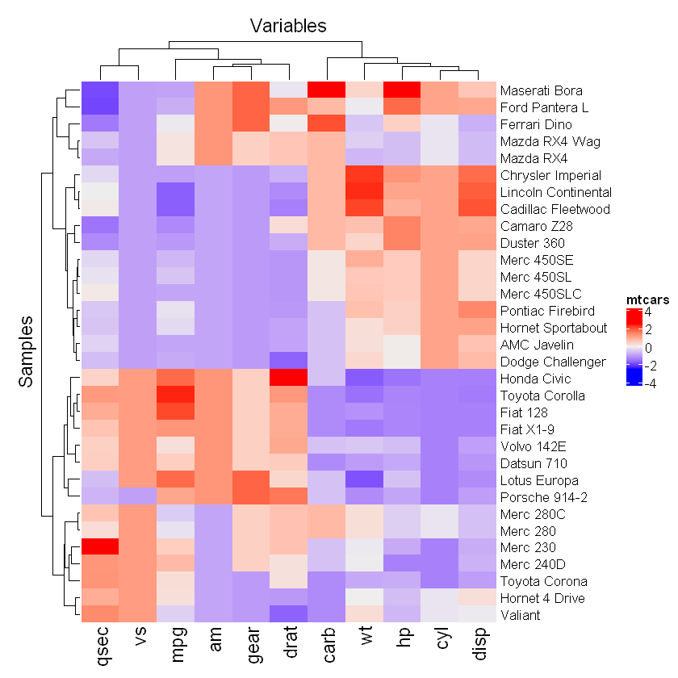
To specify a custom colors, you must use the the colorRamp2() function [circlize package], as follow
suppressPackageStartupMessages(library(circlize))
mycols <- colorRamp2(breaks = c(-2, 0, 2),
colors = c("green", "white", "red"))
Heatmap(df, name = "mtcars", col = mycols)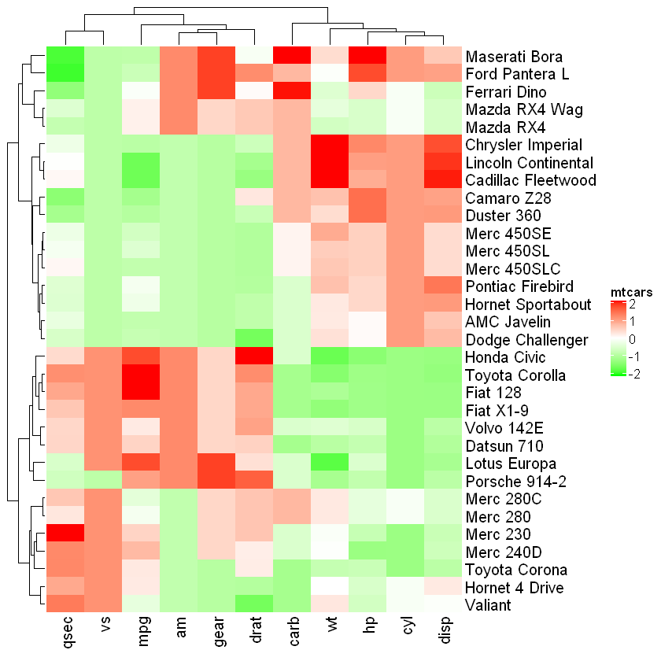
We can also customize the appearance of dendograms using the function color_branches() [dendextend package]
library(dendextend)
row_dend <- hclust(dist(df))
col_dend <- hclust(dist(t(df)))
Heatmap(df, name='mtcars',
row_names_gp = gpar(fontsize = 11),
cluster_rows = color_branches(row_dend,k=4),
cluster_columns = color_branches(col_dend,k=2)
)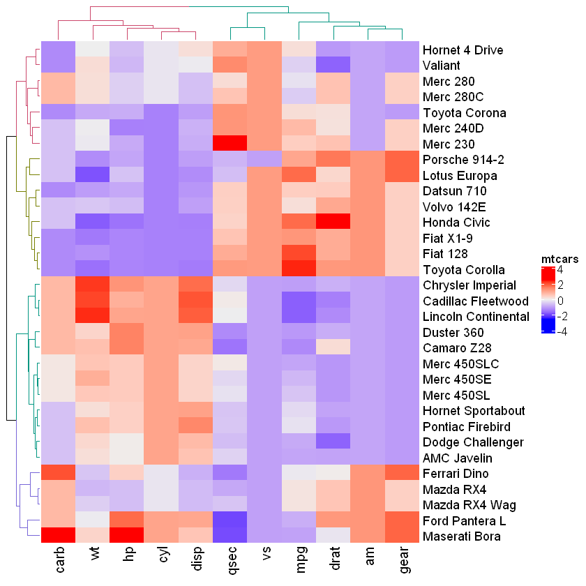
Splitting heatmap by rows
You can split the heatmap using either the k-means algorithm or a grouping variable
- by k-means
# Divide into 2 groups
set.seed(2)
Heatmap(df, name = "mtcars", k = 2)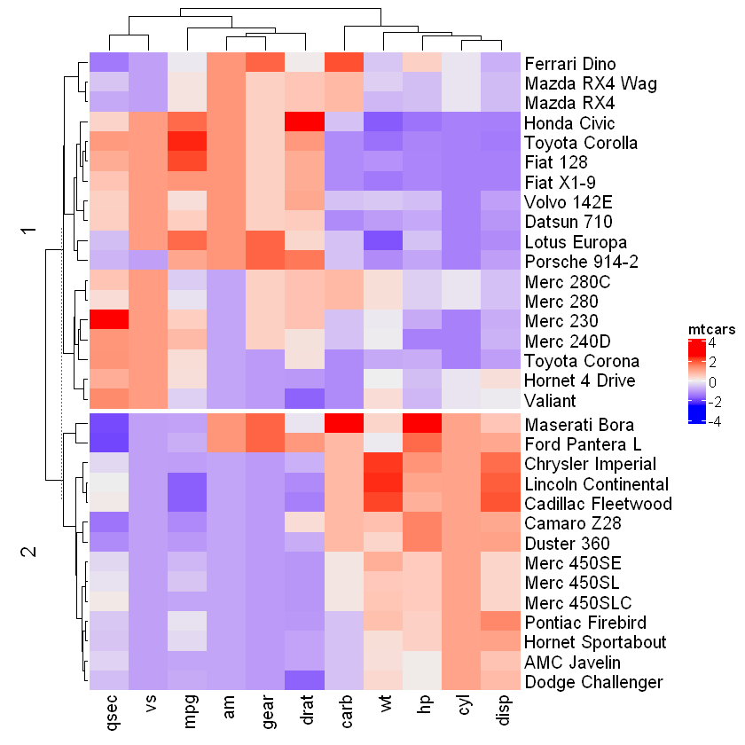
- grouping variables
# split by a vector specifying rowgroups
Heatmap(df, name = "mtcars", split = mtcars$cyl,
row_names_gp = gpar(fontsize = 7))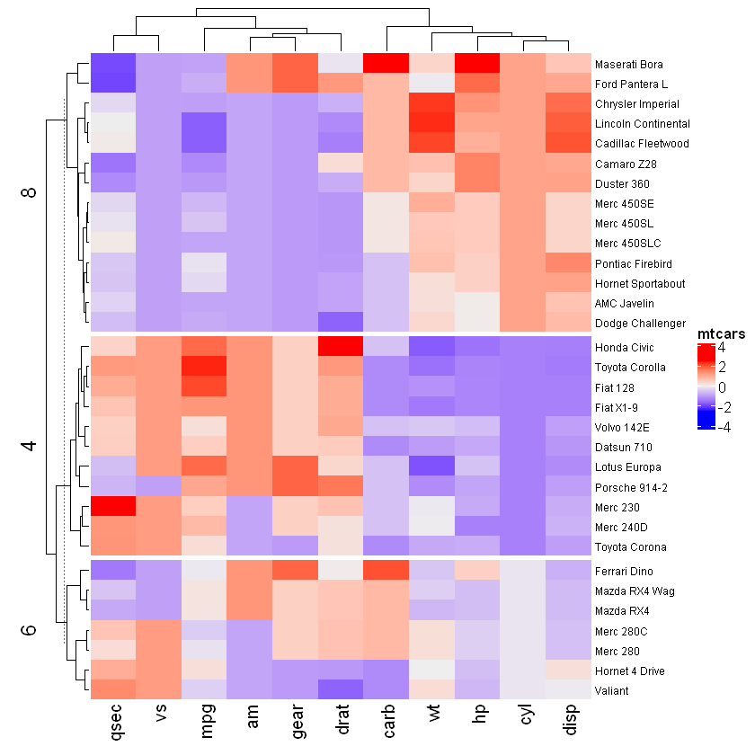
# Split by combining multiple variables
Heatmap(df, name ="mtcars",
split = data.frame(cyl = mtcars$cyl, am = mtcars$am),
row_names_gp = gpar(fontsize = 7))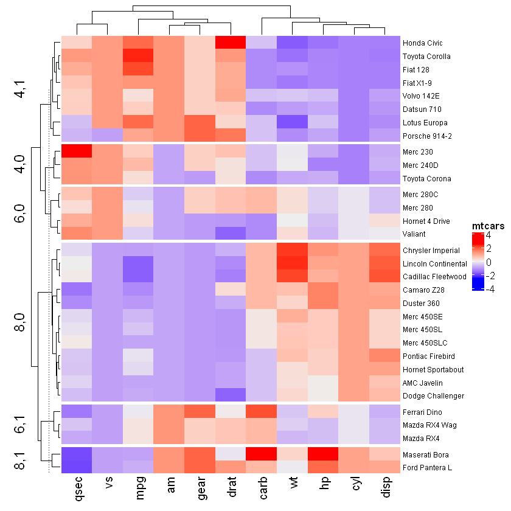
Heatmap annotation
For the example below, we’ll transpose our data to have the observations in columns and the variables in rows.
df <- t(df)Simple annotation
A vector, containing discrete or continuous values, is used to annotate rows or columns.
We’ll use the qualitative variables cyl (levels = “4”, “5” and “8”) and am (levels = “0” and “1”), and the continuous variable mpg to annotate columns.
table(mtcars['am']) 0 1
19 13
# Define colors for each levels of qualitative variables
col = list(cyl = c("4"="green","6"="gray","8"="darkred"),
am = c("0"="yellow","1"="orange"),
mpg = circlize::colorRamp2(c(10,34),
c("lightblue", "purple")))
ha <- HeatmapAnnotation(
cyl = mtcars$cyl, am = mtcars$am, mpg = mtcars$mpg,
col = col)Heatmap(df, name='mtcars',
top_annotation = ha)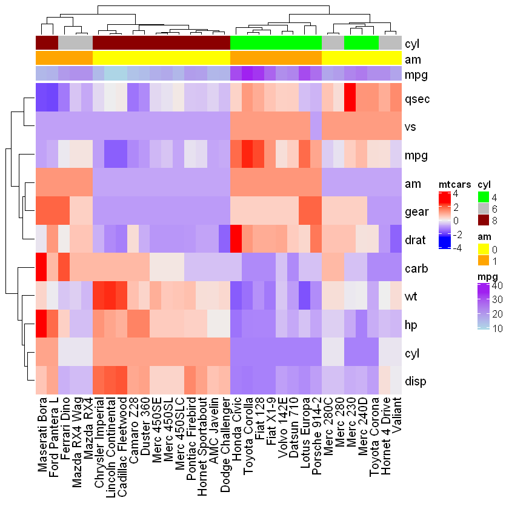
*complex annotation
# Define some graphics to display the distribution of columns
.hist = anno_histogram(df, gp = gpar(fill = "lightblue"))
.density = anno_density(df, type = "line", gp = gpar(col = "blue"))
ha_mix_top = HeatmapAnnotation(
hist = .hist, density = .density,
height = unit(3.8, "cm")
)
# Define some graphics to display the distribution of rows
.violin = anno_density(df, type = "violin",
gp = gpar(fill = "lightblue"), which = "row")
.boxplot = anno_boxplot(df, which = "row")
ha_mix_right = HeatmapAnnotation(violin = .violin, bxplt = .boxplot,
which = "row", width = unit(4, "cm"))
# Combine annotation with heatmap
Heatmap(df, name = "mtcars",
column_names_gp = gpar(fontsize = 8),
top_annotation = ha_mix_top) + ha_mix_right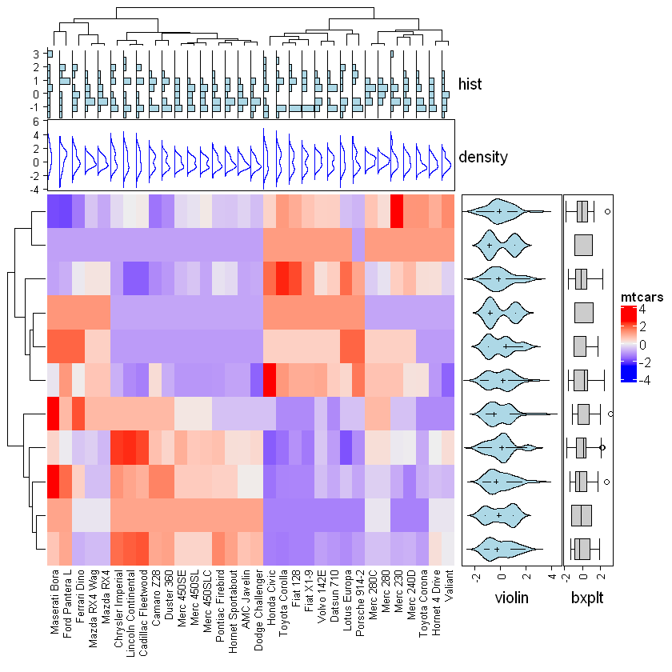
*Combining multiple heatmaps
# Heatmap 1
ht1 = Heatmap(df, name = "ht1", km = 2,
column_names_gp = gpar(fontsize = 9))
# Heatmap 2
ht2 = Heatmap(df, name = "ht2",
col = circlize::colorRamp2(c(-2, 0, 2), c("green", "white", "red")),
column_names_gp = gpar(fontsize = 9))
# Combine the two heatmaps
ht1 + ht2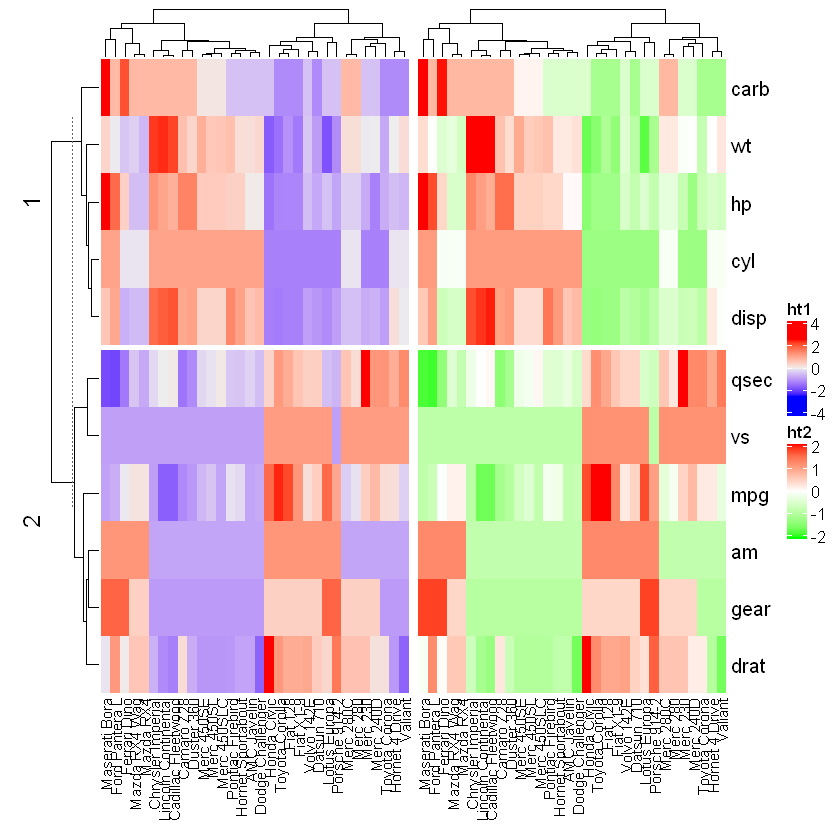
Application to gene expression matrix
In gene expression data, rows are genes and columns are samples.
More information about genes can be attached after the expression heatmap such as gene length and type of genes.
expr <- readRDS(paste0(system.file(package = "ComplexHeatmap"),
"/extdata/gene_expression.rds"))head(expr,1)| s1_cell01 | s2_cell02 | s3_cell03 | s4_cell01 | s5_cell02 | s6_cell03 | s7_cell01 | s8_cell02 | s9_cell03 | s10_cell01 | ... | s18_cell03 | s19_cell01 | s20_cell02 | s21_cell03 | s22_cell01 | s23_cell02 | s24_cell03 | length | type | chr | |
|---|---|---|---|---|---|---|---|---|---|---|---|---|---|---|---|---|---|---|---|---|---|
| <dbl> | <dbl> | <dbl> | <dbl> | <dbl> | <dbl> | <dbl> | <dbl> | <dbl> | <dbl> | ... | <dbl> | <dbl> | <dbl> | <dbl> | <dbl> | <dbl> | <dbl> | <dbl> | <chr> | <chr> | |
| gene1 | 11.11632 | 12.65986 | 11.3805 | 10.84344 | 12.29402 | 11.07829 | 11.08335 | 12.83157 | 11.24916 | 10.45512 | ... | 11.41324 | 10.69669 | 12.83305 | 11.12082 | 10.25306 | 12.63911 | 11.20286 | 124882 | protein_coding | chr1 |
table(expr$chr) chr1 chr10 chr11 chr12 chr13 chr14 chr15 chr16 chr17 chr18 chr19 chr2 chr20
9 10 6 7 3 8 9 3 5 5 5 14 3
chr22 chr3 chr4 chr5 chr6 chr7 chr8 chr9 chrM chrX
1 7 8 9 9 12 5 4 6 7
mat <- as.matrix(expr[,grep("cell",colnames(expr))])
type <- gsub('s\\d+_','',colnames(mat))
ha = HeatmapAnnotation(
df = data.frame(type = type),
annotation_height = unit(4, "mm")
)
Heatmap(mat, name='expression' , km = 5, top_annotation = ha,
show_column_names = F, show_row_names = F) +
Heatmap(expr$length, name = 'length', width = unit(5, "mm"),
col = circlize::colorRamp2(c(0,100000),c('white','orange'))) +
Heatmap(expr$type, name = 'type', width = unit(5, "mm")) +
Heatmap(expr$chr, name = 'chr', width = unit(5, "mm"),
col = circlize::rand_color(length(unique(expr$chr))))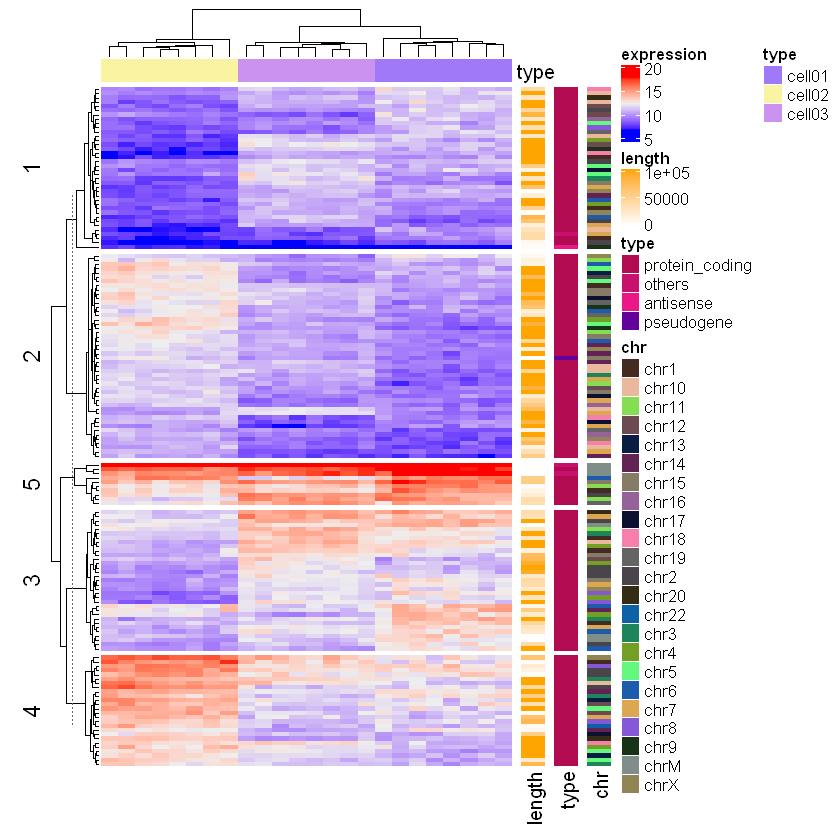
set.seed(123)
mydata <- matrix(rnorm(200), 20, 10)
mydata[1:10, seq(1, 10, 2)] = mydata[1:10, seq(1, 10, 2)] + 3
mydata[11:20, seq(2, 10, 2)] = mydata[11:20, seq(2, 10, 2)] + 2
mydata[15:20, seq(2, 10, 2)] = mydata[15:20, seq(2, 10, 2)] + 4
colnames(mydata) = paste("Sple", 1:10, sep = "")
rownames(mydata) = paste("Gene", 1:20, sep = "")
head(mydata[, 1:4], 4)| Sple1 | Sple2 | Sple3 | Sple4 | |
|---|---|---|---|---|
| Gene1 | 2.439524 | -1.0678237 | 2.305293 | 0.3796395 |
| Gene2 | 2.769823 | -0.2179749 | 2.792083 | -0.5023235 |
| Gene3 | 4.558708 | -1.0260044 | 1.734604 | -0.3332074 |
| Gene4 | 3.070508 | -0.7288912 | 5.168956 | -1.0185754 |
library("pheatmap")
pheatmap(mydata, scale = "row")Warning message:
"package 'pheatmap' was built under R version 4.0.3"
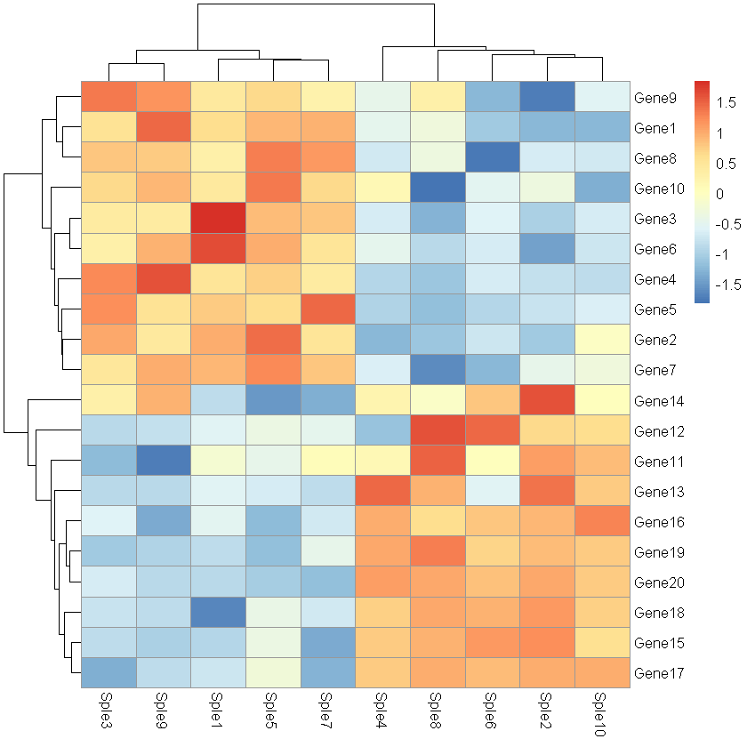